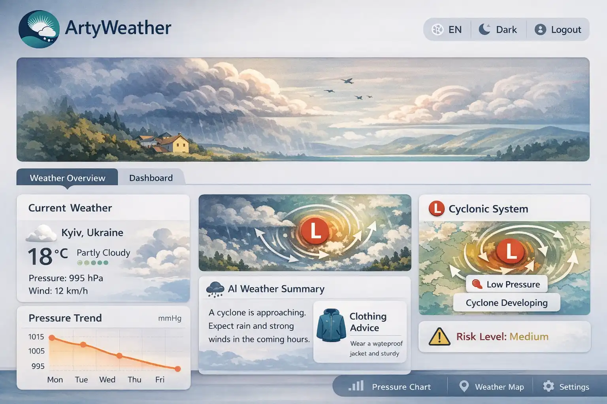

PET Project - ArtyWeather
The web application for retrieving weather data, processing it, and displaying it.
View project in GitHub repository

About project:
The web application for fetching weather data from a free API, storing it in a database, displaying it on the frontend, and generating AI-based textual summaries.
Technology Stack:
